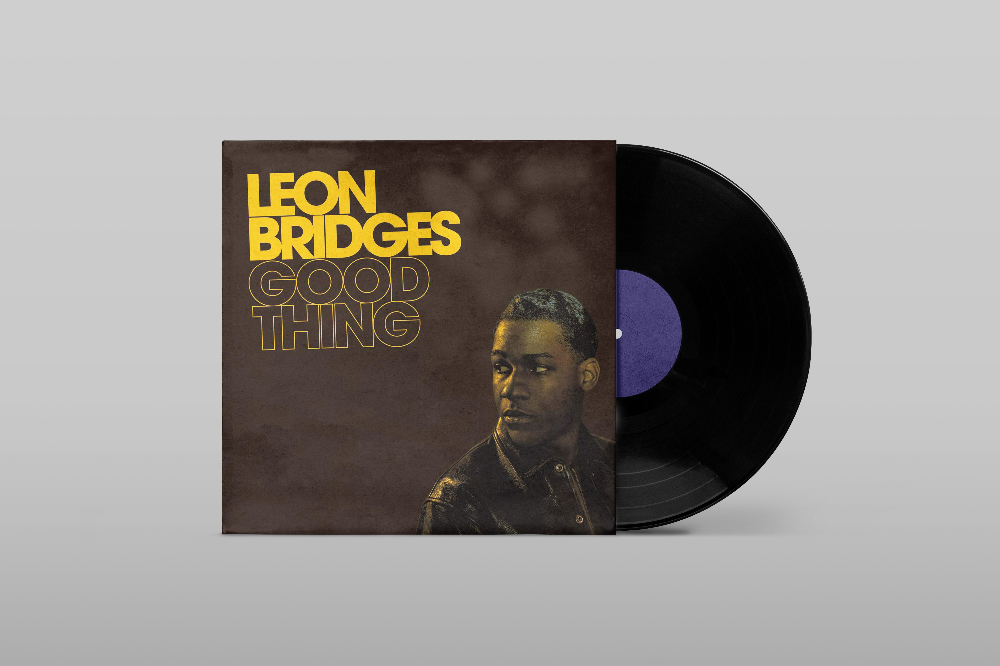
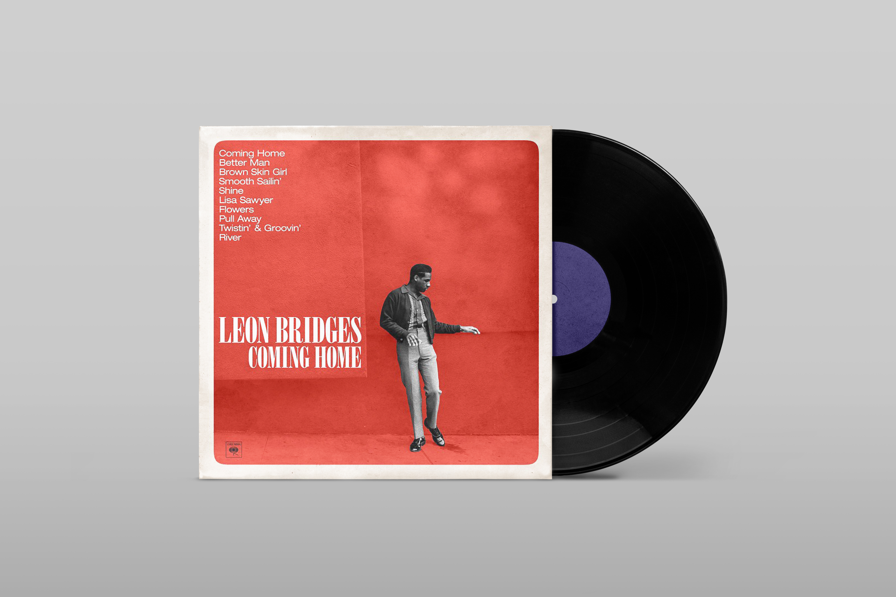
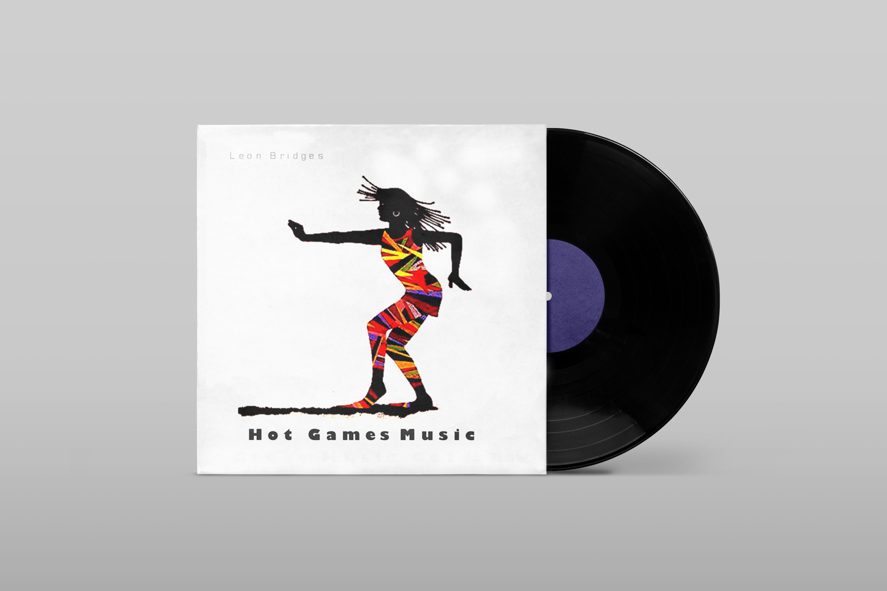
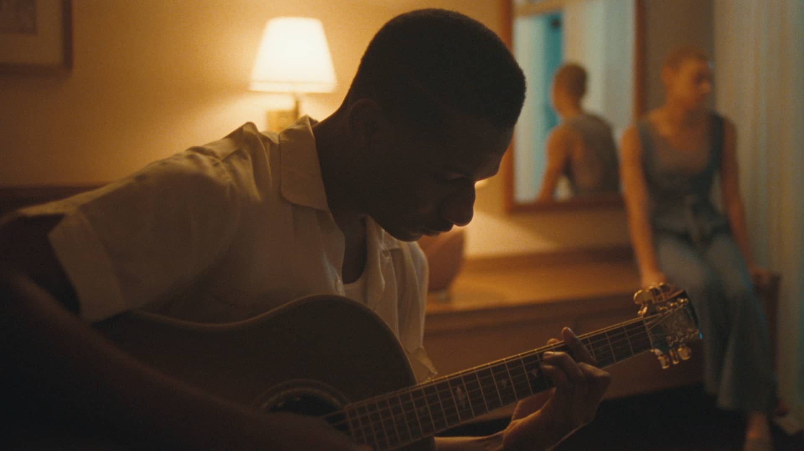

1 / 6

Good Thing is the second studio album by American singer Leon Bridges. It was released on May 4, 2018, by Columbia Records.
2 / 6

Coming Home by Leon Bridges was released on June 23, 2015, by Columbia Records. The album was written by Leon Bridges, Austin Michael Jenkins, Joshua Block, Chris Vivion and produced by Niles City Sound.
3/ 6

Hot Games music was Leon Bridges very first album produced. It was released in 2013.
4 / 6
Bridges's style is primarily soul, but resembling 1960s rhythm and blues.The Wall Street Journal described him as a "throwback to '60s-soul a la Otis Redding and Sam Cooke.
5 / 6

Brittni Jessie headlined with Leon Bridges at Edmonton’s Folk Music Festival in 2019. She also made an appearance in Leon's well-known song, and music video, "River."
6 / 6

Leon has had many of his songs featured on television. For example, in 2017 when "River" was played in the first season of the HBO series Big Little Lies. Also, the song "Better Man" was featured in the 2018 film Pacific Rim: Uprising.